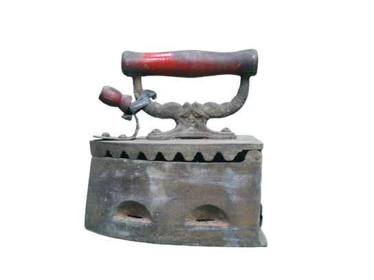
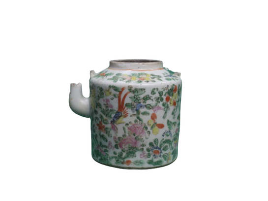
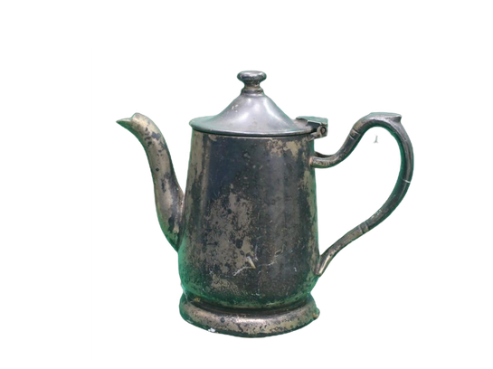
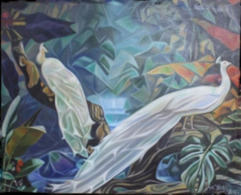
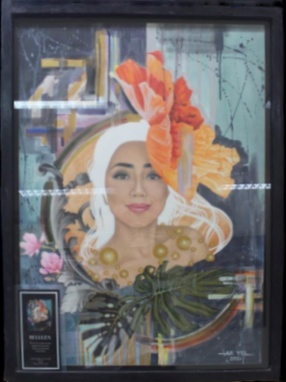
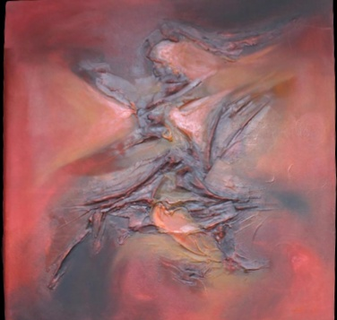

LECTURE PLAYLIST
The YouTube Channel of Museo Bulawan offers a wealth of knowledge and captivating insights through its diverse collection of lectures, thoughtfully organized into playlists based on their respective categories. Each lecture serves as a virtual gateway to a deeper understanding of various subjects, ranging from local history and cultural traditions to art and archaeology. The knowledgeable speakers delve into the intricacies of their respective fields, sharing fascinating anecdotes, research findings, and interpretations that shed light on Camarines Norte's rich heritage. Whether one is seeking to explore the region's indigenous roots, uncover the untold stories behind historical events, or gain a fresh perspective on art forms, these lectures provide an engaging and educational experience for viewers eager to delve into the depths of Camarines Norte's cultural tapestry.
ARTIFACTS
Nestled in the enchanting province of Camarines Norte, Museo Bulawan houses a treasure trove of artifacts that tell the captivating stories of the region's rich history and cultural heritage. Stepping into this museum is like embarking on a journey through time, as each artifact offers a glimpse into the past. From intricate indigenous crafts to Spanish colonial relics and remnants of the Japanese-Filipino war, the exhibits at Museo Bulawan evoke a sense of awe and fascination. Whether it's ancient pottery, traditional textiles, or vintage photographs, these artifacts serve as tangible links to the people and events that have shaped Camarines Norte. The museum stands as a testament to the profound value of preserving and celebrating the vibrant tapestry of the region's past, ensuring that its legacy lives on for generations to come.

Iron
The invention of the Charcoal iron took place during the 15th century in response to the demand for well-pressed clothing. Initially, these irons were constructed using metal materials such as cast iron or iron. They featured a singular structure with a hinged lid at the back, allowing for easy opening and closing. To generate the required heat for ironing, these irons were placed in hot coals. Additionally, a wooden handle was affixed to the top of the lid, serving as a protective measure to prevent burns while handling the iron during the ironing process.
Radio
Telefunken Vintage Radio are a testament to the timeless beauty of mid-20th century design and engineering. These iconic radios boast a striking blend of artistry and functionality, with their sleek wooden cabinets, intricate grille patterns, and polished knobs. Crafted with meticulous attention to detail, Telefunken Vintage Radios not only serve as functional audio devices but also as elegant pieces of decor that evoke a sense of nostalgia and charm.

Teapot
The personalized antique hand-painted teapot is a true work of art, showcasing intricate and delicate brushstrokes that make it one-of-a-kind. Crafted with precision and care, every detail on the teapot is meticulously hand-painted, adding a touch of elegance and uniqueness. With its personalized design, this teapot serves as a cherished heirloom, a beautiful centerpiece for any tea-time gathering, and a reminder of the artistic craftsmanship of the past.

Choco Coaster
The antique chocolate coaster resembles a traditional kettle with its distinctive design. Crafted with exquisite attention to detail, this pot showcases a charming combination of elegance and functionality. Made from durable materials, it features a long handle for easy maneuverability and a spout for precise pouring, allowing chocolatiers of the past to coat confections with a smooth, velvety layer of chocolate.
LOCAL HEROES
In the province of Camarines Norte, a land rich in history and resilience, local heroes emerged during the tumultuous period of the Japanese-Filipino war. These brave individuals, driven by unwavering patriotism and a deep love for their homeland, stood as beacons of courage and resistance. Through their selfless acts and unwavering determination, they became symbols of hope, inspiring their fellow countrymen to fight against oppression. Their stories echo through the generations, reminding us of the indomitable spirit that resides within the hearts of the people of Camarines Norte and their enduring legacy as true local heroes.
WENCESLAO Q. VINZONS SR.
(1910-1942)
Born on September 28, 1910, at Indan (now Vinzons), Camarines Norte, he had manifested signs of extraordinary brilliance at an early age. He went to school at six, finishing his elementary and high school as class valedictorian in less time than required.
He is the son of Gabino V. Vinzons and Engracia Quinito, He took his elementary education in his hometown and finished his secondary education at the Camarines Norte High School as valedictorian. He obtained his Bachelor of Laws from the University of the Philippines.
In 1927, he enrolled at the University of the Philippines and became a student leader par excellence. He excelled in forensics and oration.
He was an awardee of the Manuel L. Quezon gold medal for excellence for his oration entitled “Malaysia Irredenta” and the Abad Santos medal for excellence in debate. He was editor-in-chief of the UP’s Philippine Collegian, president of the student council, and member of the Upsilon Sigma Phi fraternity.
In 1932, he led the youth movement in protest against the salary increase of the members of the Manila Municipal Council.
In his junior year, he edited the Philippine Collegian, co-founded the College Editors Guild, and became its first president. As president of the UP-Student Council, he led demonstrations against the now infamous “Festin Rider,” an attempt by the legislators to increase their salary.
In 1933, he placed third in the bar examination. He won a seat in the Constitutional Convention in 1934 at the age of 23. He was voted most outstanding young man in politics before the war. He founded the young Philippines Party , Together with Arturo Tolentino, Teodoro Kalaw, Lorenzo Sumulong, Carmen Planas and Avelina Lorenzana (now Mrs. Camilo Osias), he waged an incessant campaign for clean government and autonomy.
On July 10, 1934, he won a seat in the Constitutional Convention and became the youngest signer of the Constitution.
He was one of those responsible for making Tagalog the national language of the Filipinos. In the 19335 elections, he supported General Emilio Aguinaldo for presidency against President Manuel L. Quezon. He went from province to province explaining the necessity of having a balanced two-party system to prevent abuses, corruption and inefficiency in governmental affairs. Bitterly critical of the administration, he was charged with libel and sedition after the election. The Cavite Court of the First Instance sentenced him to jail, but the Court of Appeals acquitted him.
In 1940, At the age of 30, he was elected governor of Camarines Norte. Later he was chosen as the “Outstanding Young Man in the Philippine Politics” for his independence of mind, constructive approach to national problems, courage, and consistency.
In 1941, he was elected Congressman of his province.
He led a fierce-fighting guerilla group in Bicol when the war broke out. After the fall of the Philippines, he refused to surrender and fled to the mountain to continue to struggle.
The Japanese Imperial Forces in the region organized an extensive manhunt to comb the forest of Camarines Norte and captured Vinzons in Batong Bakal, in the town of Labo. Refusing to join the enemy’s fold or lay down his arms, He was killed together with his wife, Liwayway Gonzales, his father, a sister, and teo children. Their remains have never been discovered.
His hometown Indan, was rename after him, In Manila, near Blumentritt, a school is named Wenceslao Vinzons Elementary School. The Student Center of UP bears his name.
JOSE MARIA E. PANGANIBAN
(1863-1890)
On December 1, 1934, Act No. 4155 renamed the mining town of Mambulao, Camarines Norte to Maria Panganiban in honor of the great propagandist who died in Spain while in pursuit of reforms in the Philippines during the Spanish colonial period.
Jose Maria Panganiban was born in Mambulao, Camarines on February 1, 1863. He was the eldest of the three sons of Vicente Panganiban, a native of Hagonoy, Bulacan and Juana Enverga, a native of Mauban, Tayabas (now Quezon).
Panganiban developed his interest in reading at an early age from reading the cartilla, caton and catecismo taught by his mother. Once, his mother found him under a tree, sleeping obviously from reading Don Quixote, the book of Cervantes, found beside him.
Since his mother died when he was a little boy, Panganiban grew up in the care of his father, the clerk of court in Daet, the capital town of the province. His father sent him to the seminary of Nueva Caceres (now Naga) and became the protégé of the seminary rector Fr. Santonja.
He earned the praises of his teachers because of his aptitude to easily absorb his lessons. He was good at writing and was articulate in expressing his ideas. Because of this, the Spanish Governor-General Domingo Moriones who happened to be visiting the province and heard him speak during a school program commended him.
In April 1878, he wrote A Nuestro Obispo in honor of Bishop Francisco Gainza who was on a visit to Mambulao. Father Santoja became instrumental for Panganiban’s studies in Manila. The priest recommended him to the College of San Juan de Letran where he obtained his degree of Bachelor of Arts in 1883.
Wanting to become a medical practitioner, he took up medical courses at the University of Santo Tomas and at the same time taking vocational courses in agriculture at Letran so that in 1885, he received the title of Agricultural Expert.
Panganiban participated in literary scientific contests at the UST and earned prizes. The first was in 1885 when he won second place. In 1887, he won first prized for each of his three papers on General Pathology, Therapeutics and Surgical Anatomy.
Fr. Gregorio Echevarria, the rector of the University, had his works printed and exhibited in the Exposition of 1887 in Madrid. In May 1888, Panganiban sailed for Spain and continued his medical studies at the
University of Barcelona, where he met other Filipino students.
Drawn to the propaganda movement, Panganiban quit his dream of becoming a doctor. He joined liberal organizations like the Asociacion Hispano-Filipino and the La Solidaridad that both of which aimed for reforms in the Philippines.
On April 25, 1889, Panganiban was one of the signers of the petition to the Spanish Minister of Colonies, requesting for Filipino representation in the Spanish Cortes. While in Spain, he learned other languages like German, Italian, and French, adding to the Spanish and Latin he learned during his student days in the seminary of Nueva Caceres. He was able to translate into Spanish the book of German author Carl Julius Weber entitled: Die Religio und Die Religionen.
SEE MORE ⮞
PENTIMENTO
Pentimento is a painting over a painting that is beautifully brought to life by the talented painter Aryel Villanueva. With a unique blend of skill and creativity, Vilalanueva showcases his remarkable artworks in various exhibitions, ranging from bustling malls to prestigious museums. His paintings possess a captivating quality that captures the essence of his subjects, inviting viewers into a world of vivid imagination and emotional depth.

SERENITY
OIL ON CANVAS

BELLEZA
MIXED MEDIA ON PAPER

INFERNO
OIL ON CANVAS